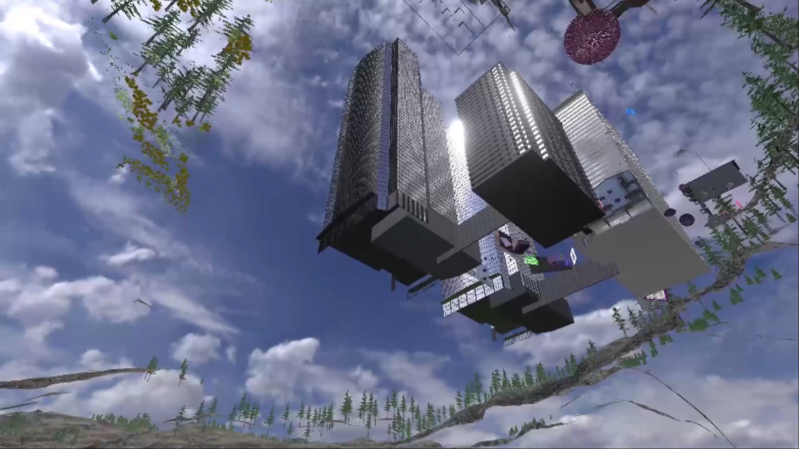

비장소
현대 사회의 특징을 기술하기 위해, 마크 오제(Marc Augé, 1995)가 인류학의 전통적인 연구 대상, 즉 "인류학적 장소(anthropological places)"와 대비되는 장소성을 특징짓기 위해 고안한 개념인 "비장소(non-places)"는 현대 미디어 문화, 특히 모바일 문화의 공간성을 이해하는 핵심 개념으로 간주될 수 있다. 비장소는 '미디어 침투 공간'으로서 미디어 표상, 대인관계, 미디어 이용 행태 등의 측면에서 기존 관점에서 간과한 특성을 이해할 수 있게 해 준다.
